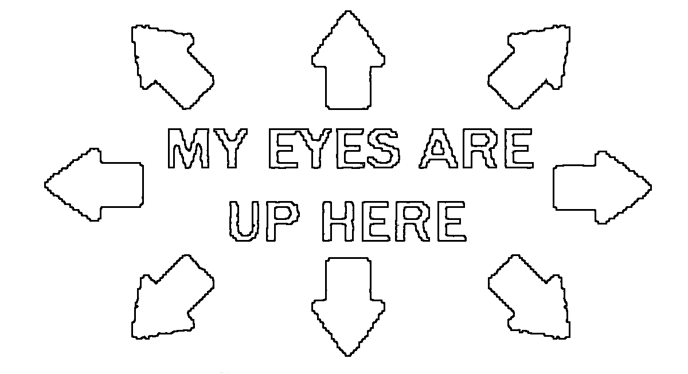

i am a creature of queer identity & origin. on the internet, everybody knows im a dog! collect my multitudes to unlock bonus cutscenes.
HARLEY. any & it. 20yrs rotting

2.26.2026 wired thoughts for wired people. i always thought the lain psx game looked cool, in the way that most things that arent readily accessible or understandable are cool to me.